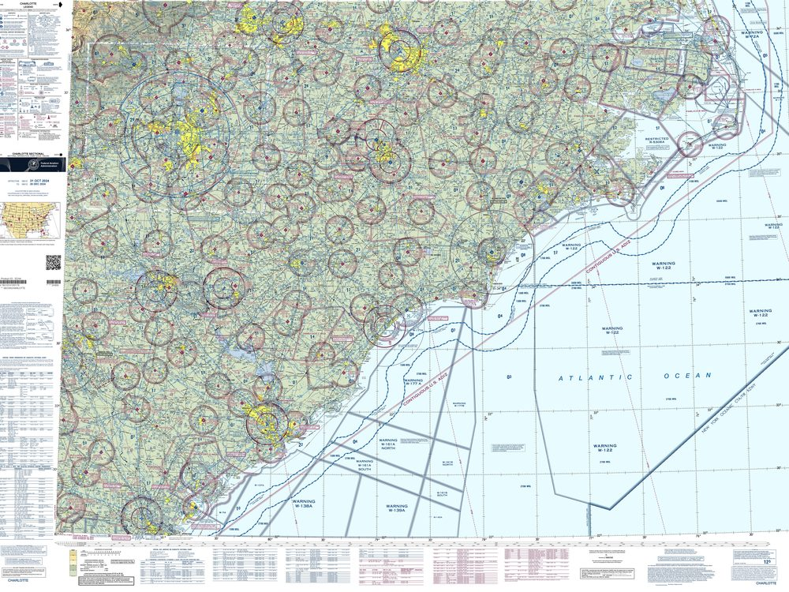
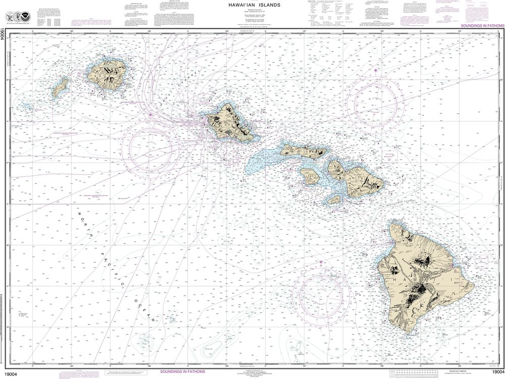
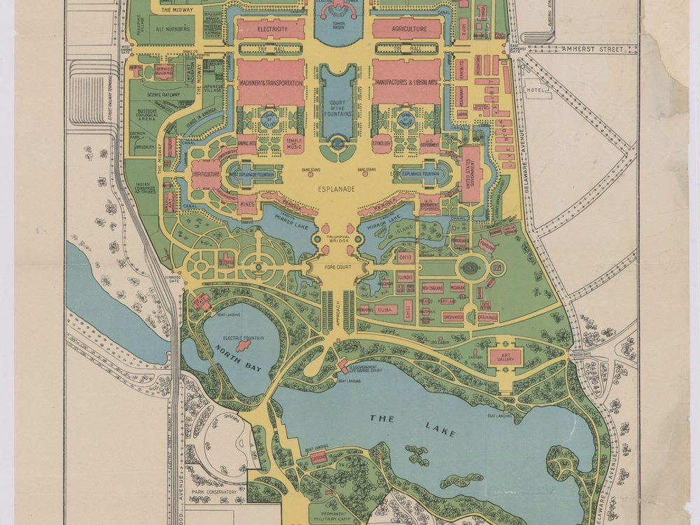
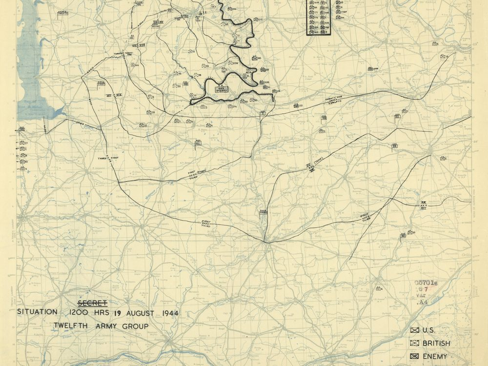

MapQA
A public challenge in visual question answering over real-world maps
- What is MapQA?
- A visual question-answering benchmark over real maps and charts: 11,176 questions grounded in 525 published maps, from FAA aviation charts to nautical, topographic, urban, and historical military maps.
- Why?
- Maps pack symbols, legends, labels, bearings, and spatial relationships into a single image that a trained reader resolves effortlessly. MapQA tests whether vision-language models can do the same.
Examples

What VOR on this map is at a bearing of 178° from Fayetteville?
Answer Grand Strand

What does the box drawn in magenta east of Hilo Bay represent?
Answer explosives dumping area

Which exhibit is positioned just south of the Jerusalem Exhibit?
Answer Indian Congress 42 Tribes

Which river flows through St-Lo as labeled on the main map?
Answer the Vire
Leaderboard
Models are scored on a fixed 500-question evaluation split, available on the download page. Answers are free-form text and are graded using an LLM judge against the human-written reference answer. The LLM judge does not see the map nor the question, only the reference and candidate answers. Human performance is measured on the same task.
| # | Model | Accuracy (%) | Questions |
|---|---|---|---|
| – | Humans | 91.4 | – |
| 1 | Claude Fable 5.1 | 44.2 | 500 |
| 2 | GPT-o4-mini | 40.8 | 500 |
| 3 | Gemini 3.1 Flash-Lite (thinking) | 39.8 | 500 |
| 4 | Gemini 3.5 Flash-Lite (thinking) | 39.6 | 500 |
| 5 | GPT-5 Mini | 39.4 | 500 |
| 6 | Claude Opus 5 | 38.0 | 500 |
| 7 | GPT-5 | 38.0 | 500 |
| 8 | Qwen3.5 27B | 34.0 | 500 |
| 9 | Qwen3.8 27B | 31.8 | 500 |
| 10 | Qwen3-VL 32B | 29.8 | 500 |
| 11 | Perceptron Mk1.5 (thinking) | 28.4 | 500 |
| 12 | Claude Opus 4.8 | 27.4 | 500 |
| 13 | GPT-4.1 | 25.2 | 500 |
| 14 | GPT-5 Nano | 25.0 | 500 |
| 15 | Nemotron 3 Nano Omni 30B | 24.4 | 500 |
| 16 | Inkling-Small 276B (thinking) | 24.2 | 500 |
| 17 | Qwen3.6 35B-A3B | 24.2 | 500 |
| 18 | Gemma 4 31B | 23.8 | 500 |
| 19 | Gemma 4 31B (thinking) | 23.4 | 500 |
| 20 | GPT-4o | 22.2 | 500 |
| 21 | Claude Sonnet 5 | 21.8 | 500 |
| 22 | Ministral 3 14B | 20.4 | 500 |
| 23 | Gemma 4 26B-A4B | 19.2 | 500 |
| 24 | Gemma 3 27B | 18.2 | 500 |
| 25 | Mistral Small 3.2 24B | 17.0 | 500 |
| 26 | Mistral Small 4 119B | 16.2 | 500 |
| 27 | Claude Opus 4 * | 15.5 | 322 |
| 28 | Claude Sonnet 4 * | 14.0 | 322 |
| 29 | Claude 3.5 Haiku * | 13.3 | 135 |
| 30 | Claude Haiku 4.5 | 12.6 | 500 |
| 31 | Qwen2.5-VL 3B | 12.2 | 500 |
| 32 | Llama-3 11B | 9.2 | 500 |
| 33 | LLaVA-Next 72B | 6.4 | 500 |
| 34 | Pixtral 12B | 6.0 | 500 |
| 35 | LLaVA-Next 34B | 5.6 | 500 |
| 36 | LLaVA-Next 7B (Mistral) | 4.8 | 500 |
| 37 | LLaVA-Next 7B (Vicuna) | 4.6 | 500 |
| 38 | LLaVA-Next 13B (Vicuna) | 3.0 | 500 |
| 39 | Reka Edge 7B | 1.6 | 500 |
| 40 | Phi-3.5 Vision | 1.6 | 500 |
* Evaluated on a partial split; score is provisional.
About the dataset
Real-world maps compress an enormous amount of information into a single image: symbols, legends, labels, bearings, and spatial relationships that a trained reader resolves effortlessly. MapQA asks whether today's vision-language models (VLMs) can do the same. Each question is grounded in a published map and requires reasoning over the map.
The questions are drawn from four domains: aviation charts, natural-world maps such as topographic and soil maps, urban maps such as city, zoning, and transportation maps, and historical military maps. Every question was written or verified by human annotators, and a filter removes questions that can be answered without looking at the map. The maps are mostly real documents: FAA charts, nautical charts, topographic sheets, and more. Many images come from the Library of Congress or the National Park Service. 25% of the maps in the full corpus have been held back as a private evaluation set and are not part of this release. Images are not included; each question carries the source URL for its image instead.
Each question is tagged with one or more of seventeen skills. The most common are spatial relations, feature identification, attribute and value lookup, position within the map frame, extremum and comparison selection, legend and symbology interpretation, nearest or farthest selection, label reading, bearing and direction reasoning, route tracing, metadata lookup, and counting. Others cover grid and coordinate referencing, measurement, presence or absence detection, description, and inference. A subset of questions spans two images, typically a chart and its legend.
Participate
The challenge is open to anyone. To have a model listed:
- Run your model on the evaluation split and produce one free-form answer per question.
- Send us your predictions along with the model name, size, and whether it used extended reasoning.
- We grade submissions with the same protocol used for every entry above and add the result to the table.
Contact: ORGANIZER_EMAIL